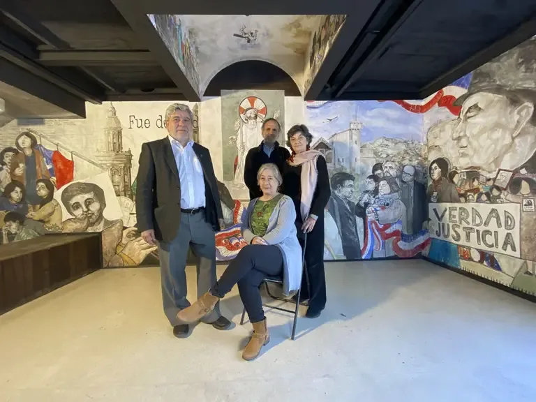
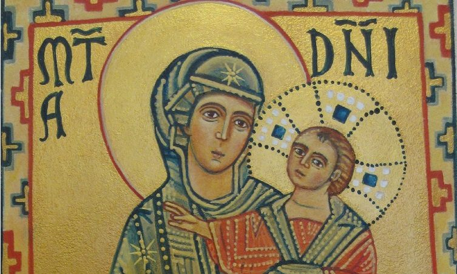
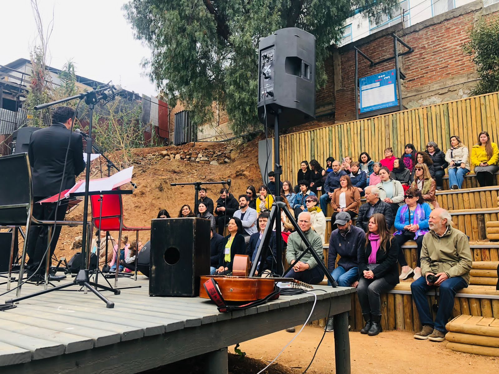
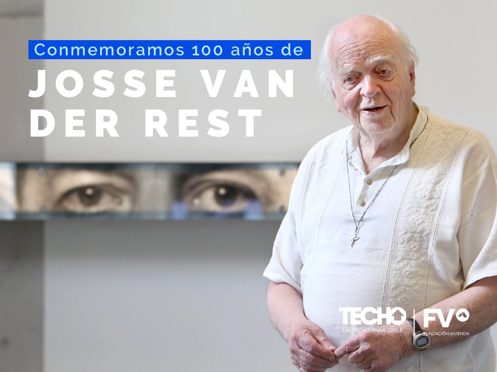
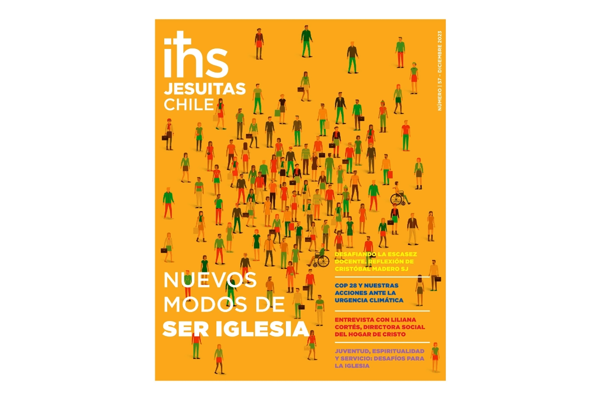
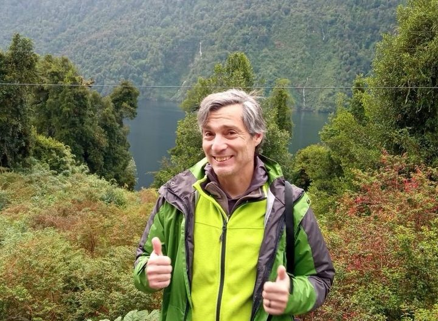

Educación
Una red educativa al servicio de Chile
Colegios, universidades y centros de formación que acompañan a miles de jóvenes a lo largo de todo el país.
Conoce la Compañía
El compromiso de la Provincia Chilena se despliega en cinco frentes complementarios.
En todo amar y servir.





Preguntas frecuentes e información del proceso.
Publicaciones y revistas de la Provincia.
Los que se encuentran hoy en la portada.
Calugas con contenido por revisar/migrar desde el sitio actual.
Recibe noticias, reflexiones e invitaciones de la Provincia Chilena directamente en tu correo.